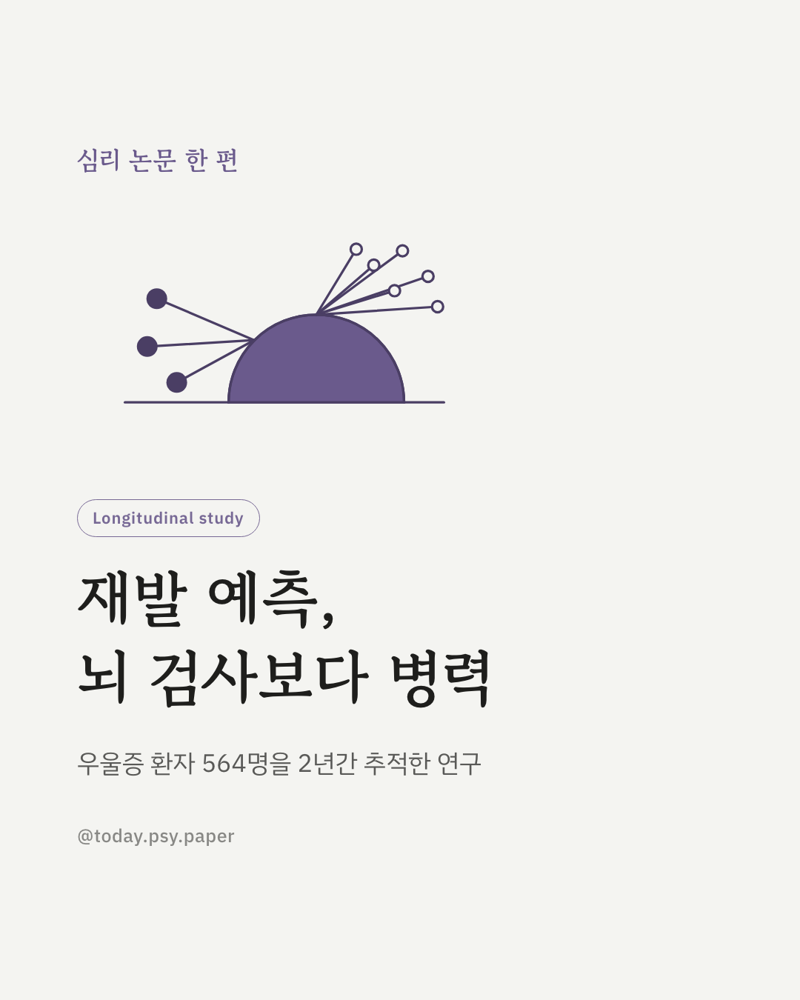
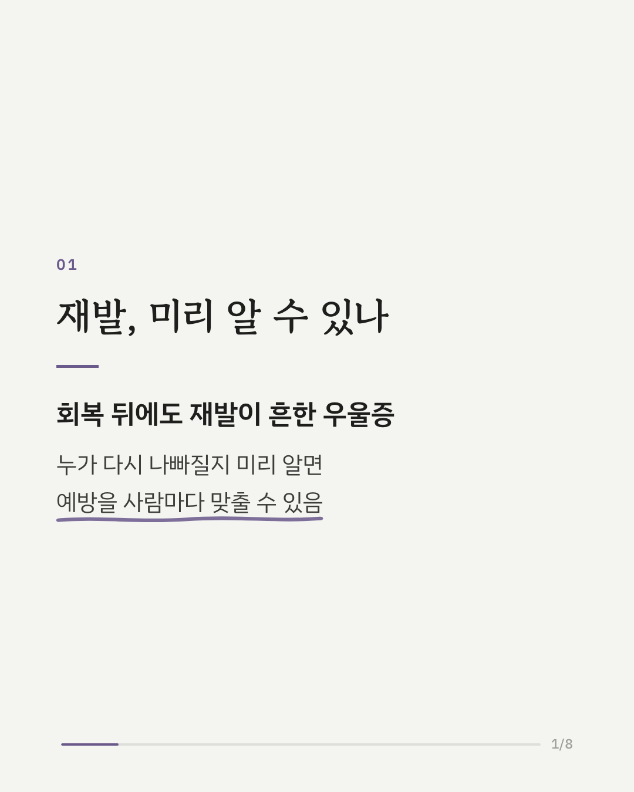
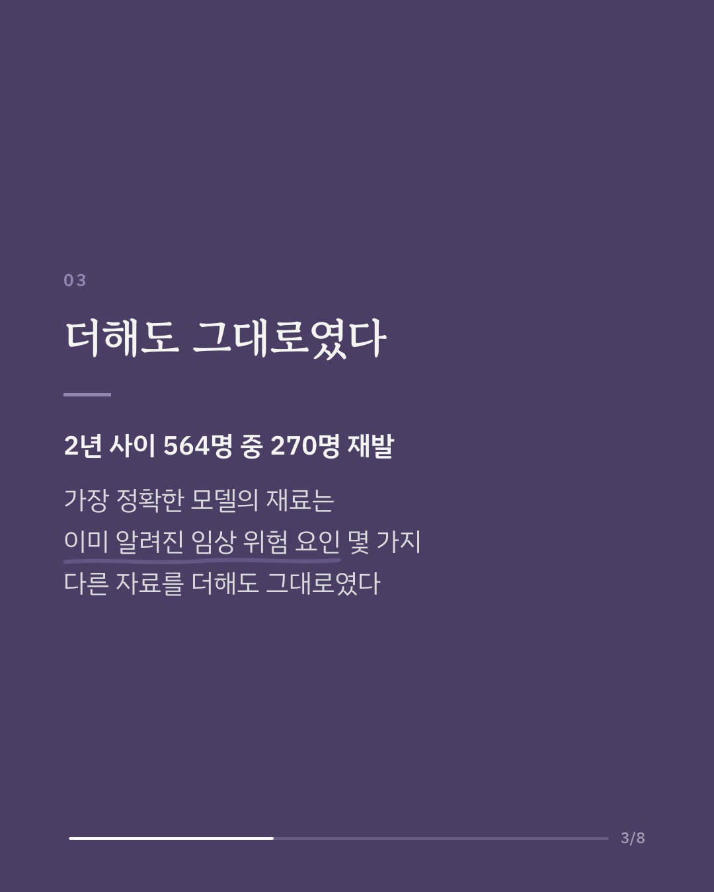
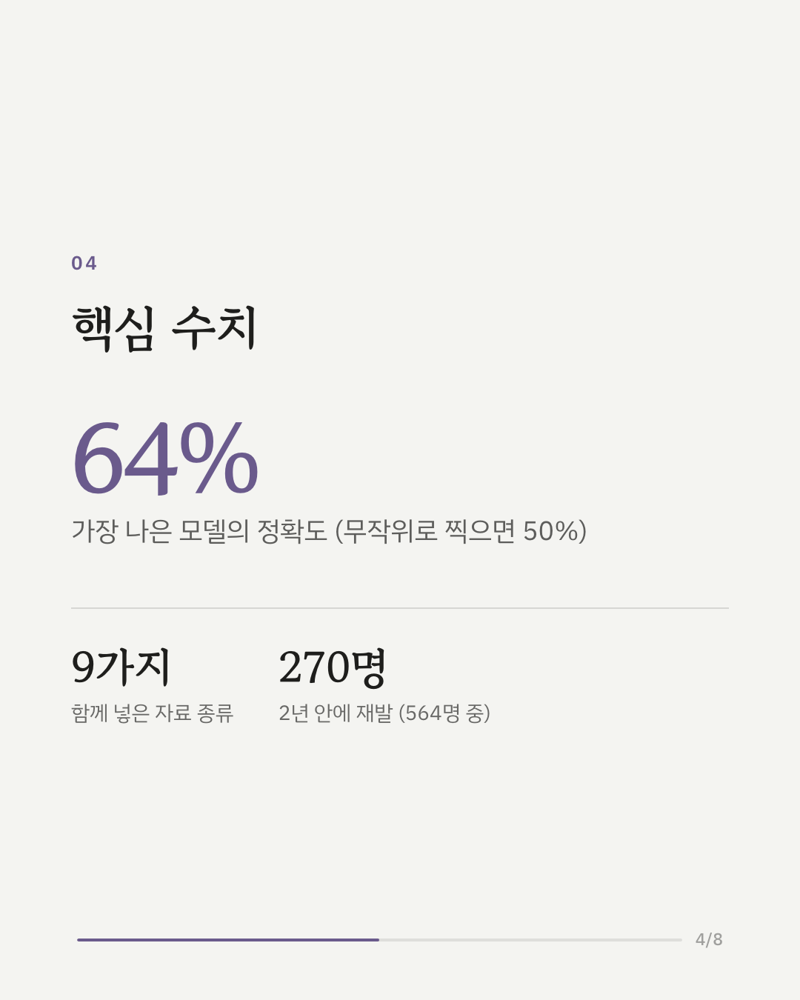
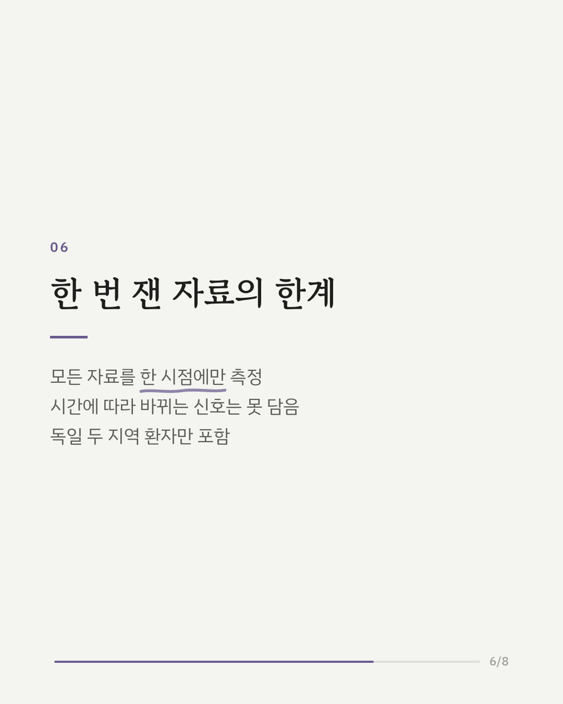
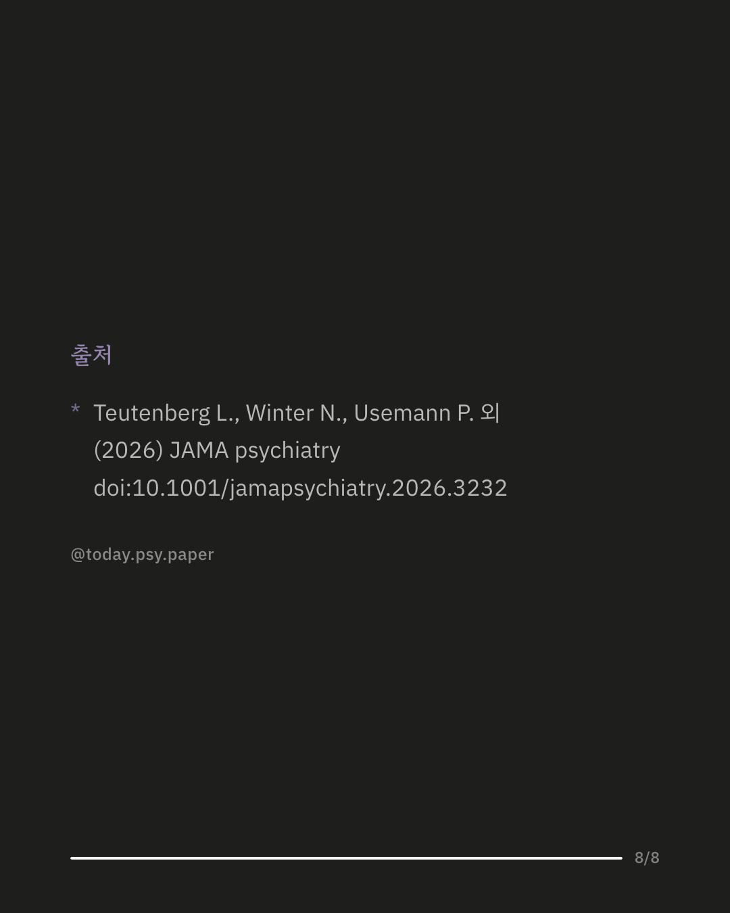

우울증은 회복한 뒤에도 재발이 흔한 질환입니다. 누가 재발할지 미리 알 수 있다면 예방을 사람마다 다르게 준비할 수 있기 때문에, 독일 연구진은 기계학습으로 2년 안의 재발을 예측해 보려 했습니다. 환자 564명에게서 임상 정보, 심리검사, 뇌 영상 4종, 유전자, 인지 기능, 혈액 지표, 장내 세균까지 9가지 자료를 모았고, 2년 동안 270명이 재발했습니다. 가장 정확한 모델의 정확도는 약 64%였는데(무작위로 찍으면 50%), 이 모델은 이미 알려진 몇 가지 임상 위험 요인만 사용한 모델이었습니다. 뇌 영상이나 유전자 같은 자료를 더해도 예측은 나아지지 않았습니다. 연구진은 이 정도 정확도로는 한 사람 한 사람의 진료 결정에 쓰기 어렵다고 보았습니다. 다만 모든 자료를 처음 한 시점에만 측정했기 때문에, 시간에 따라 바뀌는 변화를 추적하면 결과가 달라질 수 있습니다. 출처: JAMA Psychiatry (2026), 'Multimodal Machine Learning-Based Prediction of Relapse in Major Depressive Disorder' DOI: 10.1001/jamapsychiatry.2026.3232 #임상심리 #정신건강정보 #심리학연구 #논문리뷰 #우울증 #우울증재발 #머신러닝 #정신의학
python3 publish.py 42905697